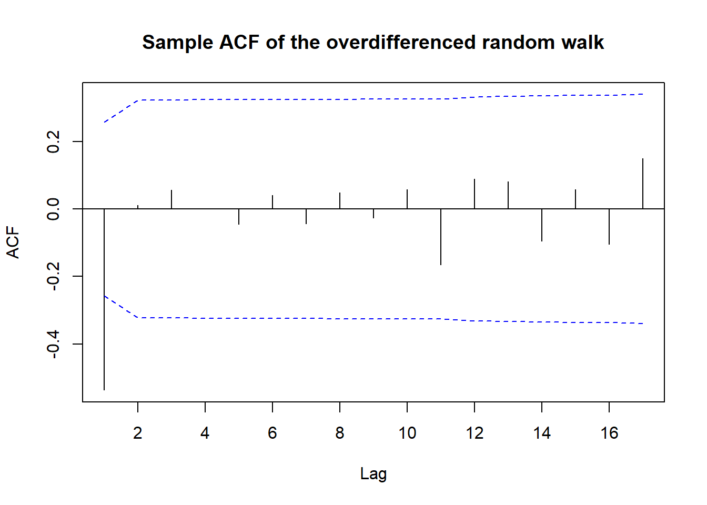

Code
library(TSA)Warning: package 'TSA' was built under R version 4.4.2| Step 1: Model Specification | Step 2: Parameter Estimation | Step 3: Model Checking | Step 4: Forecasting |
This R notebook is based on Chapter 6, Cryer and Chan (2008), Time Series Analysis with Applications in R. Springer.
We have developed a large class of parametric models for both stationary and nonstationary time series – the ARIMA models. We now begin our study and implementation of statistical inference for such models. The subjects of the next three chapters, respectively, are:
Our overall strategy will first be to decide on reasonable preliminary values for \(p\), \(d\), and \(q\) (this notebook).
We will fit a model to the data (Chapter 7) and then check the residuals for autocorrelation and normality (Chapter 8). If the residuals are not white noise, we will try to improve the model by changing the values of \(p\), \(d\), and \(q\).
library(TSA)Warning: package 'TSA' was built under R version 4.4.2# Load the data
data(ma1.1.s)
# ACF of the series
acf(ma1.1.s,
xaxp=c(0,20,10),
main = "ACF of MA(1) with theta=0.9")acf(ma1.1.s,
ci.type='ma',
xaxp=c(0,20,10),
main = "Alternative bounds for the ACF of MA(1) with theta=0.9")data(ma1.2.s)
acf(ma1.2.s,
xaxp=c(0,20,10),
main = "ACF of MA(1) with theta=-0.9")data(ma2.s)
acf(ma2.s,
xaxp=c(0,20,10),
main = "ACF of MA(2) with theta1=1, theta2=-0.6")acf(ma2.s,
ci.type='ma',
xaxp=c(0,20,10),
main = "Alternative bounds for the ACF of MA(2) with theta1=1, theta2=-0.6")data(ar1.s)
acf(ar1.s,
xaxp=c(0,20,10),
main = "ACF of AR(1) with phi=0.9") pacf(ar1.s,xaxp=c(0,20,10),
main = "PACF of AR(1) with phi=0.9")data(ar2.s)
acf(ar2.s,
xaxp=c(0,20,10),
main = "ACF of AR(2) with phi1=1.5, phi2=-0.75")pacf(ar2.s,
xaxp=c(0,20,10),
main = "PACF of AR(2) with phi1=1.5, phi2=-0.75")data(arma11.s)
plot(arma11.s, type='o',ylab=expression(Y[t]),
main = "ARMA(1,1) with phi=0.6, theta=-0.3")acf(arma11.s,xaxp=c(0,20,10),
main = "ACF of ARMA(1,1) with phi=0.6, theta=-0.3")pacf(arma11.s,xaxp=c(0,20,10),
main = "PACF of ARMA(1,1) with phi=0.6, theta=-0.3")# In an R Notebook, simply run this code chunk:
# 1) Create an empty matrix filled with "X":
n_ar <- 8 # AR orders from 0 to 7
n_ma <- 14 # MA orders from 0 to 13
eacf_mat <- matrix("X", nrow = n_ar, ncol = n_ma)
# 2) Fill with "0" below the main diagonal:
# For AR>0, columns at or past that AR index become "0".
for (i in 2:n_ar) { # i=2 means AR=1, i=3 means AR=2, etc.
for (j in i:n_ma) { # j runs from "i" through 14
eacf_mat[i, j] <- "0"
}
}
# 3) Put the special "0*" mark (the star at AR=1, MA=0):
eacf_mat[2, 2] <- "0*"
# 4) Label rows and columns:
rownames(eacf_mat) <- paste0("AR=", 0:(n_ar-1))
colnames(eacf_mat) <- paste0("MA=", 0:(n_ma-1))
# 5) Display the table nicely (using knitr::kable or similar):
library(knitr)
kable(eacf_mat, align = "c", caption = "Theoretical EACF for ARMA(1,1)")| MA=0 | MA=1 | MA=2 | MA=3 | MA=4 | MA=5 | MA=6 | MA=7 | MA=8 | MA=9 | MA=10 | MA=11 | MA=12 | MA=13 | |
|---|---|---|---|---|---|---|---|---|---|---|---|---|---|---|
| AR=0 | X | X | X | X | X | X | X | X | X | X | X | X | X | X |
| AR=1 | X | 0* | 0 | 0 | 0 | 0 | 0 | 0 | 0 | 0 | 0 | 0 | 0 | 0 |
| AR=2 | X | X | 0 | 0 | 0 | 0 | 0 | 0 | 0 | 0 | 0 | 0 | 0 | 0 |
| AR=3 | X | X | X | 0 | 0 | 0 | 0 | 0 | 0 | 0 | 0 | 0 | 0 | 0 |
| AR=4 | X | X | X | X | 0 | 0 | 0 | 0 | 0 | 0 | 0 | 0 | 0 | 0 |
| AR=5 | X | X | X | X | X | 0 | 0 | 0 | 0 | 0 | 0 | 0 | 0 | 0 |
| AR=6 | X | X | X | X | X | X | 0 | 0 | 0 | 0 | 0 | 0 | 0 | 0 |
| AR=7 | X | X | X | X | X | X | X | 0 | 0 | 0 | 0 | 0 | 0 | 0 |
# Compute EACF
eacf(arma11.s)AR/MA
0 1 2 3 4 5 6 7 8 9 10 11 12 13
0 x x x x o o o o o o o o o o
1 x o o o o o o o o o o o o o
2 x o o o o o o o o o o o o o
3 x x o o o o o o o o o o o o
4 x o x o o o o o o o o o o o
5 x o o o o o o o o o o o o o
6 x o o o x o o o o o o o o o
7 x o o o x o o o o o o o o o # Differencing the random walk twice
z <- rnorm(60)
rw <- ts(cumsum(z))
plot(diff(diff(rw)))# ACF and PACF of the twice-differenced series
acf(diff(diff(rw)),
xaxp=c(0,22,11),
ci.type='ma',
main="Sample ACF of the overdifferenced random walk")
acf(diff(rw),
xaxp=c(0,22,11),
main="Sample ACF of the correctly differenced random walk")# Augmented Dickey-Fuller test
# Unit root test of the random walk and its first difference
library(tseries)Registered S3 method overwritten by 'quantmod':
method from
as.zoo.data.frame zoo adf.test(rw)
Augmented Dickey-Fuller Test
data: rw
Dickey-Fuller = -3.6351, Lag order = 3, p-value = 0.03785
alternative hypothesis: stationaryadf.test(diff(rw))
Augmented Dickey-Fuller Test
data: diff(rw)
Dickey-Fuller = -4.4087, Lag order = 3, p-value = 0.01
alternative hypothesis: stationarySchwarz Bayesian Information Criterion (BIC) \[ BIC = – 2\log(maximum likelihood) + k\log(n) \] where \(k\) is the number of parameters in the model and \(n\) is the number of observations.
Minimizing the BIC is equivalent to maximizing the likelihood of the model while penalizing for the number of parameters.
# ARMA Subsets
set.seed(92397)
yt <- arima.sim(model=list(ar=c(rep(0,11),0.8),
ma=c(rep(0,11),0.7)),n=120)
res <- armasubsets(y=yt,nar=14,nma=14,
y.name='yt',ar.method='ols')
plot(res)# Load the oil price data
data(oil.price)
# Plot the oil price series
acf(as.vector(diff(log(oil.price))),xaxp=c(0,22,11))pacf(as.vector(diff(log(oil.price))),xaxp=c(0,22,11))# Generate a random walk
set.seed(439)
z <- rnorm(60)
rw <- ts(cumsum(z))
# Plot the random walk
plot(rw, main="Random Walk")# Unit root test of the random walk and its first difference
adf.test(rw)
Augmented Dickey-Fuller Test
data: rw
Dickey-Fuller = -1.5526, Lag order = 3, p-value = 0.7556
alternative hypothesis: stationaryadf.test(diff(rw))
Augmented Dickey-Fuller Test
data: diff(rw)
Dickey-Fuller = -3.3082, Lag order = 3, p-value = 0.079
alternative hypothesis: stationary# ACF, PACF of the Random Walk
acf(rw, main="ACF of Random Walk")pacf(rw, main="PACF of Random Walk")After differencing \[ W_t=\nabla Y_t = Y_t - Y_{t-1}. \]
# ACF, PACF of the differenced Random Walk
acf(diff(rw), main="ACF of differenced Random Walk")pacf(diff(rw), main="PACF of differenced Random Walk")# Load the data
data(larain)
plot(larain)# Stabilize the variance
qqnorm(log(larain),
main = "Normal Q-Q Plot of log(larain)")
qqline(log(larain))Displaying sample autocorrelations
acf(log(larain),
xaxp=c(0,20,10),
main = "ACF of log(larain)")mean(log(larain))[1] 2.593385sd(log(larain))[1] 0.4774679# Load the data
data(color)
plot(color)# Plot ACF and PACF
acf(color,ci.type='ma', lag.max=20, main="ACF of color")pacf(color, lag.max=20, main="PACF of color")# Load the data
data(hare)
plot(hare)# Box-Cox transformation
BoxCox.ar(hare)# Plot ACF and PACF of the transformed series
acf(hare^.5, main="ACF of hare^.5")pacf(hare^.5, main="PACF of hare^.5")library(tseries)
# Load the data
data("oil.price")
plot(oil.price)
# Plot ACF and PACF
acf(as.vector(oil.price),
xaxp=c(0,24,12),
main="ACF of oil.price")pacf(as.vector(oil.price),
xaxp=c(0,24,12),
main="PACF of oil.price")# Log transformation
plot(log(oil.price))# Differencing the log-transformed series
plot(diff(log(oil.price)))acf(diff(as.vector(log(oil.price))),xaxp=c(0,24,12))pacf(diff(as.vector(log(oil.price))),xaxp=c(0,24,12))# ADF test: to test for stationarity of log-transformed series
adf.test(log(oil.price))
Augmented Dickey-Fuller Test
data: log(oil.price)
Dickey-Fuller = -1.1119, Lag order = 6, p-value = 0.9189
alternative hypothesis: stationaryadf.test(diff(log(oil.price)))Warning in adf.test(diff(log(oil.price))): p-value smaller than printed p-value
Augmented Dickey-Fuller Test
data: diff(log(oil.price))
Dickey-Fuller = -6.6505, Lag order = 6, p-value = 0.01
alternative hypothesis: stationaryres <- armasubsets(y=diff(log(oil.price)),nar=7,nma=7,y.name='test', ar.method='ols')
plot(res, main = "ARMA Subsets")